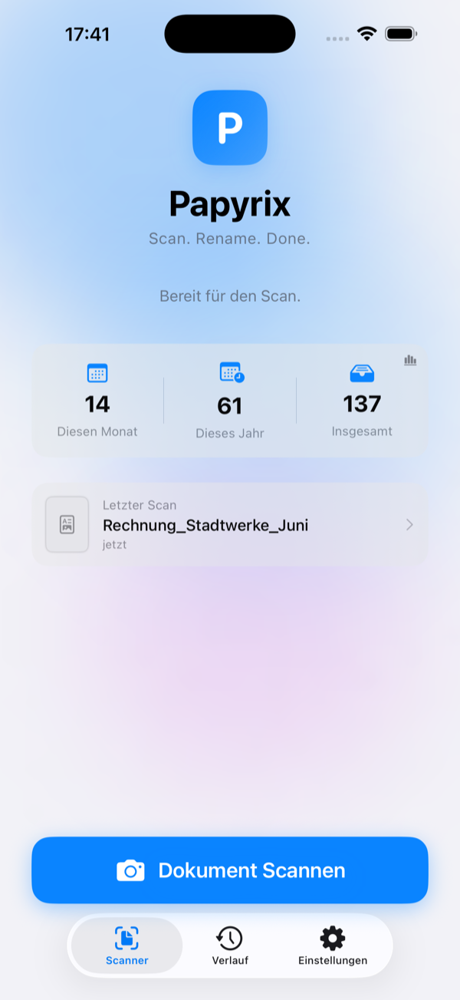
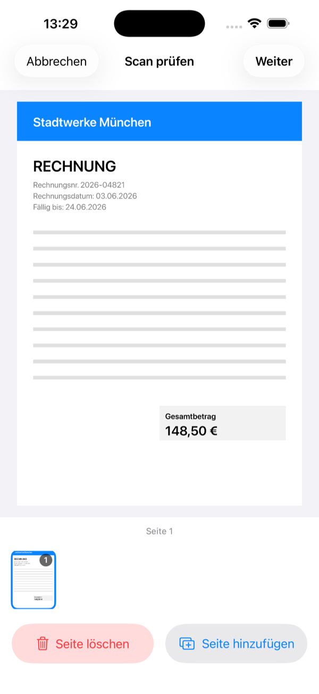
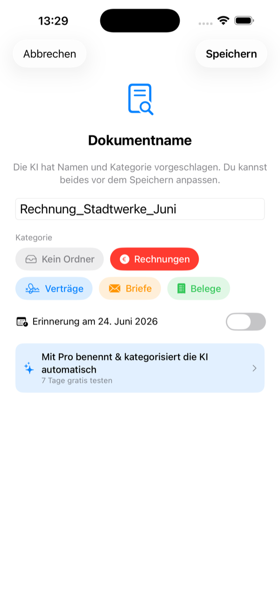
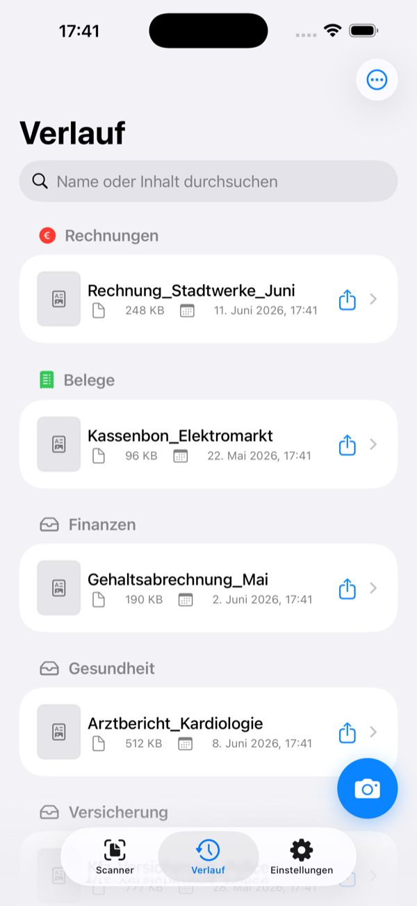

Deine Post endlich digital & sortiert – ganz von allein.
Rechnungen, Briefe, Quittungen: einscannen genügt. Papyrix benennt und kategorisiert jedes Dokument mit lokaler KI und legt es als durchsuchbares PDF in deiner iCloud ab. Einfach, schnell und 100 % privat.

Sieh Papyrix in Aktion
Vom Papier zum sortierten PDF – in Sekunden.
Kennst du das?
Die meisten von uns digitalisieren ihre Unterlagen nicht richtig – und suchen dann ewig. Papier stapelt sich, PDFs heißen „Scan_0042" und niemand findet sie wieder.
Post & Briefe
Wichtige Schreiben landen im Stapel, gehen verloren oder werden nie eingescannt.
Rechnungen
Zahlungsziele, Verträge, Mahnungen – ohne Ordnung verpasst man schnell das Wichtige.
Quittungen & Belege
Garantien und Kassenbons sind genau dann weg, wenn man sie braucht.
Das ändern wir. Mit Papyrix ist Digitalisieren so einfach wie ein Foto – den Rest macht die KI.
So einfach geht's
Scannen, benennen, ablegen – in Sekunden. Ohne Vorlagen, ohne Aufwand.
Einfach abfotografieren
Tippe auf „Dokument scannen" und richte die Kamera aufs Papier. Papyrix erkennt die Ränder automatisch und liest den Text per OCR.

Die KI benennt & sortiert
Apples On-Device-KI schlägt einen sinnvollen Dateinamen vor und ordnet das Dokument deiner Kategorie zu – Rechnung, Vertrag, Beleg. Alles lokal, nichts verlässt dein Gerät.

Alles wiederfinden
Deine Dokumente liegen als durchsuchbare PDFs ordentlich nach Kategorien sortiert – in deiner eigenen iCloud-Ordnerstruktur. Volltextsuche inklusive.

Alles drin, nichts kompliziert
Ein Scanner, der mitdenkt – und deine Daten bei dir lässt.
Blitzschnell scannen
Automatische Kantenerkennung & OCR über alle Seiten.
KI benennt & sortiert
Passender Name und Kategorie – ganz automatisch.
Durchsuchbare PDFs
Volltext finden – auch in alten Dokumenten.
Deine iCloud
Ablage in deiner eigenen Ordnerstruktur.
PDF-Werkzeuge
Seiten ordnen, zusammenführen, aufteilen.
Privat by Design
Kein Konto, keine Server, kein Tracking.
Deine Dokumente gehören dir
Scannen, Texterkennung und KI laufen komplett auf deinem iPhone. Keine Nutzerkonten, keine fremden Server, kein Tracking. Wir sehen deine Dokumente nie.
Einfaches Preismodell
Scannen & speichern ist kostenlos. Die smarten Funktionen schaltest du mit Papyrix Pro frei – 7 Tage gratis.
Gratis
Scannen & als PDF in iCloud speichern.
Pro – Jährlich
KI-Benennung & -Kategorisierung, OCR, PDF-Werkzeuge. 7 Tage gratis.
Pro – Lifetime
Alle Pro-Funktionen für immer, kein Abo.
Ebenfalls erhältlich: Pro Monatlich für 0,99 € / Monat. Abos verlängern sich automatisch und sind jederzeit im App Store kündbar.
Häufige Fragen
Werden meine Dokumente in eine Cloud hochgeladen?
Nein. Scannen, Texterkennung und KI-Benennung laufen vollständig auf deinem iPhone. Gespeichert wird nur in dem Ordner, den du selbst wählst – in der Regel deine eigene iCloud Drive.
Brauche ich ein Konto?
Nein. Papyrix funktioniert ohne Registrierung und ohne Anmeldung.
Was ist gratis, was kostet Papyrix Pro?
Scannen und Speichern als PDF sind kostenlos. KI-Benennung, Kategorisierung, OCR-Volltextsuche und die PDF-Werkzeuge sind Teil von Papyrix Pro (7 Tage gratis, danach 0,99 €/Monat, 9,99 €/Jahr oder 24,99 € einmalig).
Welche Geräte werden unterstützt?
iPhone mit aktueller iOS-Version. Die KI-Funktionen nutzen Apples On-Device-Technologien (Apple Intelligence).